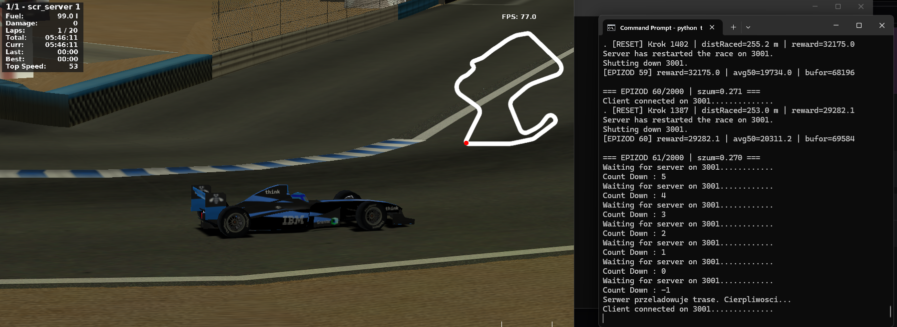

About me
Hello, my name is Paweł Lelakowski. I am a Computer Science student at the Cracow University of Technology, passionate about Software Engineering, Artificial Intelligence, and Machine Learning.
I develop my skills through hackathons and hands-on projects as an active member of an AI student research group. Most notably, I participated in the IBM Racing Challenge, where my team applied Reinforcement Learning algorithms to optimize autonomous agents using Python.
My primary goal is to specialize in AI engineering, but I am genuinely open to any software development projects where I can build practical things.
Technologies
Projects

IBM Racing Challenge 2026
An autonomous racing agent developed for the TORCS simulator as part of the IBM Racing Challenge. The agent navigates tracks using a 70-dimensional telemetry array (speed, steering angles, track position, wheel slip) trained with Proximal Policy Optimization (PPO). My primary focus was on running the multi-phase curriculum training pipeline, iteratively tuning the reward function parameters (target speed, steering penalties, track centering), and analyzing crash telemetry logs to improve agent stability on complex tracks.
Contact
Have a project in mind? Reach out via email.